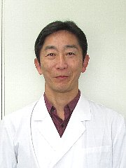
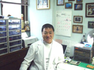
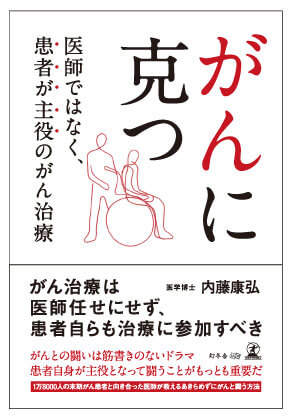
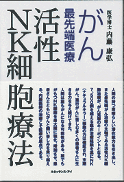
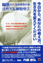
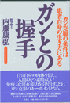

简体中文
简体中文


院長 亀井智貴

所属
- 産業医
略歴
- １９８９年 福岡大学医学部 卒業
- ２００１年 名古屋大学大学院外科学博士課程
- ２０２２年 名古屋メディカルクリニック所属
非常勤医師 西山智広
所属
- 日本形成外科学会認定医
略歴
- １９８８年 藤田学園保健衛生大学医学部 卒業
- １９９６年 慶應義塾大学伊勢慶應病院形成外科診療部長
- １９９７年 にしやま形成外科を開設
- １９９９年 にしやま形成外科皮フ科クリニックに名称変更
- ２００２年 医療法人桃姫メディカルを設立
非常勤医師 三好得司

所属
- 日本産婦人科学会専門医
- 母体保護法指定医師
- ダイビングインストラクター（BSAC・NAUI）
略歴
- １９７７年 東邦大学医学部 卒業
- １９７７年 近畿大学付属病院
- １９８６年 特定医療法人 一祐会藤本病院産婦人科部長
- １９９５年 三好産婦人科 継承
- ２００７年 活性NK細胞の研究及び治療開始
専門とする疾患
- 更年期、老年期医療
- プラセンタ療法
- 悪性腫瘍診断
- ガン遺伝子検査
- ガン免疫ドッグ
- ガン免疫療法（活性ＮＫ細胞療法・その他）
- 一般不妊治療
- 皮フ疾患（にきび、魚の目、アトピー肌）
顧問 内藤康弘（前理事長）

書籍

がんに克つ
（幻冬舎メディアコンサルティング）

がん最先端医療 活性ＮＫ細胞療法

２１世紀のがん先端医療 がん免疫細胞医療 活性ＮＫ細胞療法
今日から、あなたの考え方、生き方を変えてください

ガンとの握手（文芸社）
１％の希望 １００％の決意（メタモル出版）
チャガビット知られざる全貌（日露学術共同研究チーム）
他